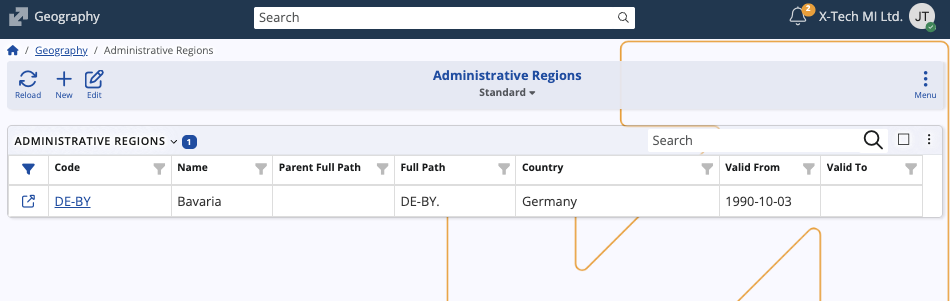
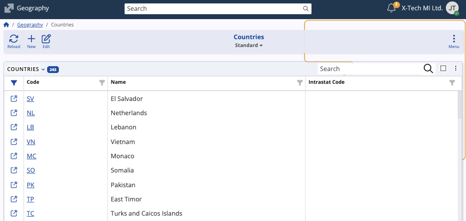

Geography
The Geography submodule in ERP.net defines and maintains geographical data used across the system.
It provides a structured way to organize locations, territories, and administrative regions, enabling consistent geographic references in documents, addresses, routes, and enterprise operations.
Structure
The submodule contains four panels:
- Areas – User-defined divisions of sales or operational territories. Areas can be hierarchical, with parent–child relationships, and are used to segment markets, assign representatives, or manage regional reporting.
- Geo Points – Geographic points (latitude and longitude) that serve as locations or points of interest on the map. Each point can be linked to an enterprise company and include address information.
- Administrative Regions – Hierarchical representation of legally defined regions within countries (such as states, provinces, or municipalities). These records support structured address data and country subdivisions.
- Countries – A list of countries identified by their international suffix codes.

Data contents
Each panel maintains specific datasets that contribute to ERP.net’s overall geographic framework:
The Areas panel lists all defined sales or operational areas, including their Name, Code, and Parent area (if applicable).

The Geo Points panel displays Name, Enterprise Company, Latitude, Longitude, and Address, enabling mapping or navigation functionalities.

The Administrative Regions panel includes Code, Name, Country, Parent Full Path, and Validity Dates, which define the active period of each region.

The Countries panel shows all supported countries with their respective Code, Name, and Intrastat Code, ensuring consistent country information across the system.

From each panel, you can view existing records, edit entries, or create new ones.
Note
The screenshots taken for this article are from v.26 of the platform.